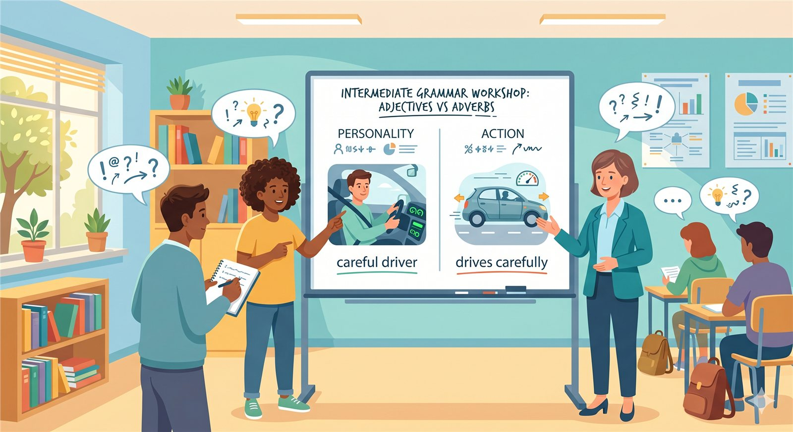
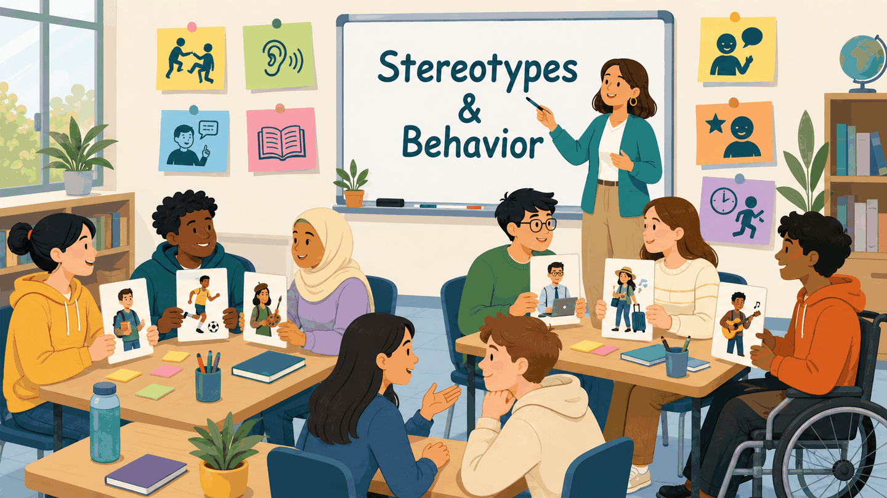
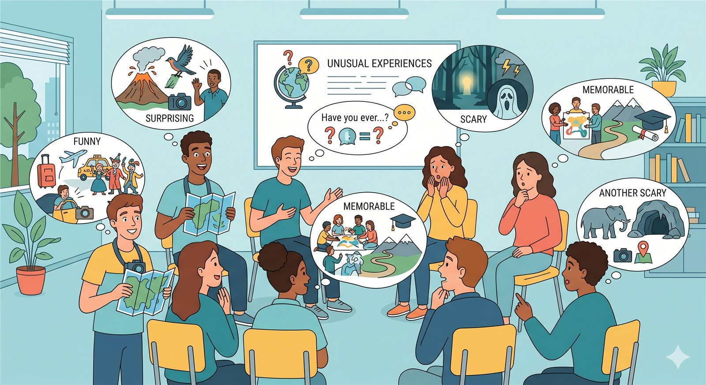
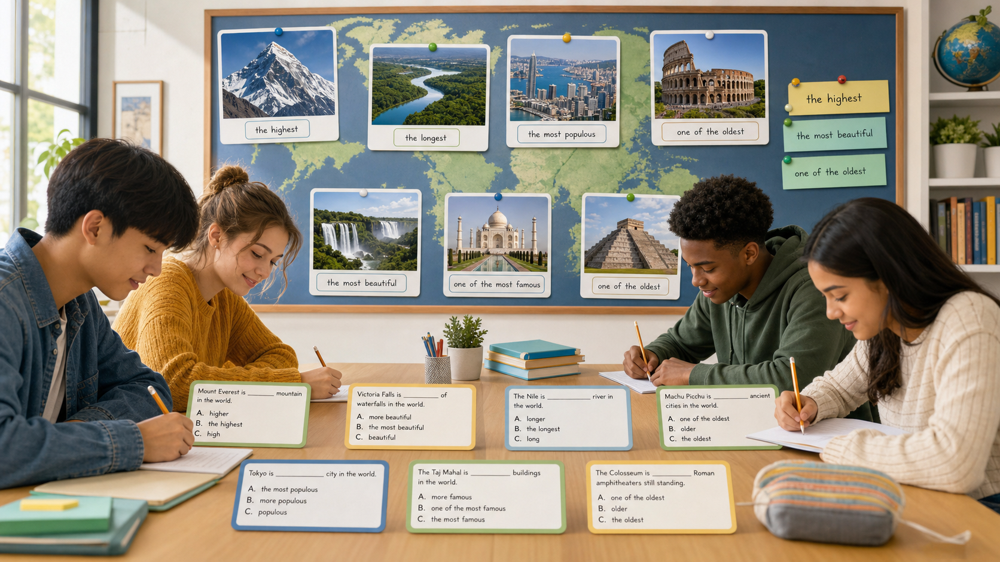
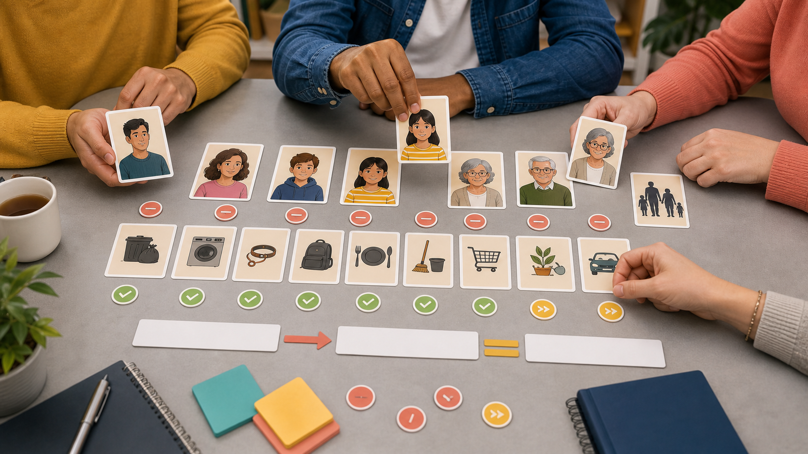
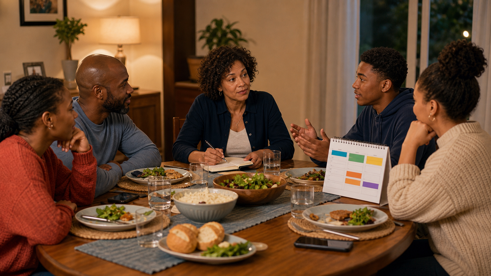
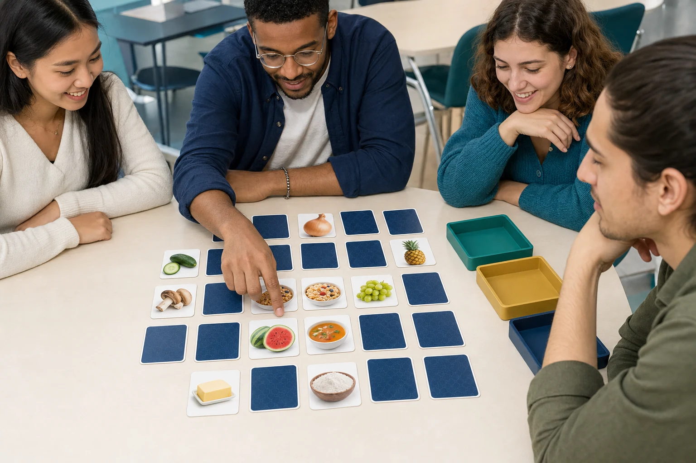
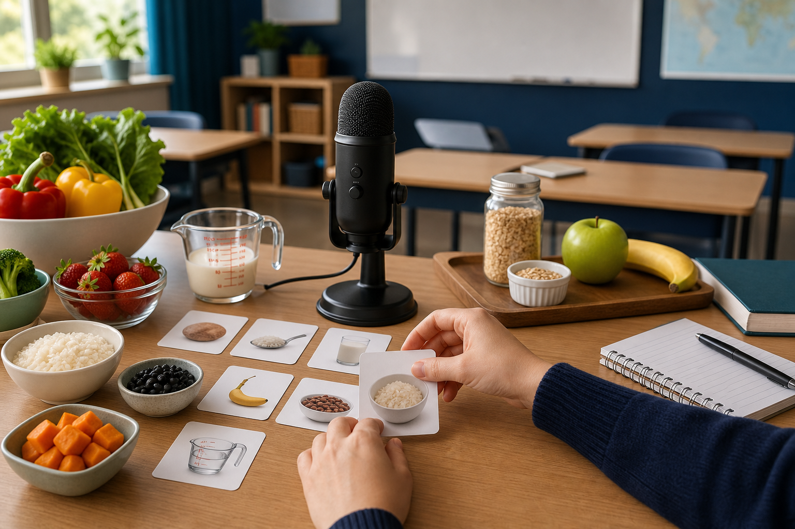

01
Grammar Workshop: Adjectives vs. Manner Adverbs
Practice describing what people are like and how they behave in different situations.
Open activityIntermediate English Course 1
Practice Lab is organized by unit so each game, reading, listening, workshop, and speaking activity stays connected to the course topic it supports.
Practice dashboard
Open each folder to find the practice activities connected to that unit.
Personality, behavior, stereotypes, descriptions, labels, and cautious language.

Practice describing what people are like and how they behave in different situations.
Open activityUse personality adjectives, behavior descriptions, and classroom interaction to guess characters respectfully.
Open activity
Explain what people are believed to be like, how they usually behave, and why generalizations can be incomplete.
Open activityCreate an original character, describe personality traits and habits, and compare powers.
Open activityListen to a superhero story about stereotypes, first impressions, and looking beyond labels.
Open activity
Continue the story with a reading about names, rumors, and the real stories behind quick labels.
Open activityInvestigate a burglary scene, interview an eyewitness, describe suspects, and summarize the case cautiously.
Open activityPractice personality descriptions in four guided sections, receive immediate feedback, and complete the full-paragraph challenge.
Start practicingPersonal goals, support, timelines, recent life events, and detailed conversations.
Prepare a written timeline of recent life events before a partner conversation.
Open activityListen to a two-voice American English conversation about reconnecting and ordering life events.
Open activity
Read a reflective story about a dream that changes direction and answer a follow-up reading check.
Open activity
Interview a classmate about a goal, ask follow-up questions, and submit a practical support plan.
Open activityPractice hopes and a life-changing experience in four guided sections, then complete the full-paragraph challenge.
Start practicingSuperlatives, famous places, measurement language, opinions, and justifications.
Choose from five image walls, answer superlative questions, compare famous places, and justify opinions.
Open activityChoose a human or natural wonder, prepare a 2–4 minute oral presentation with superlatives, facts, and a recommendation, then vote as a class.
Open activity
Complete 20 fill-in-the-blank grammar sentences with three serious options, detailed feedback, and no answer-pattern shortcuts.
Open activityPractice questions and answers for height, length, depth, age, area, population, and distance.
Open activityListen to three travelers compare wonders with superlatives, measurements, facts, and recommendations.
Open activityRead about a community record project and identify facts, reasons, results, and local identity.
Open activityUse country data cards to compare mountains, rivers, human wonders, and surprising facts for the oral task.
Open activityPractice superlatives, comparisons and a recommendation in four guided sections, then complete the full-paragraph challenge.
Start practicingObligations, permission limits, respectful disagreement, mediation, and past habits with used to.

Practice have to, won't let, want someone to, and used to before the speaking task.
Open activity
Listen to a fictional family negotiate dinner responsibilities, phone limits, homework, and a fair agreement.
Open activityRead a family memory story and notice how used to connects past habits with present routines.
Open activityPractice reductions and rhythm for used to, have to, wants someone to, and polite disagreement.
Start practicingUse role cards to negotiate responsibilities and write a fair fictional family agreement.
Open activityWrite a short blog comparing what a fictional family used to do with what they agree to do now.
Open activityTeacher opens one idiom or phrasal verb, students submit original sentences, and the class reads the live wall.
Open live wallPlay a live hidden-role game with Unit 4 phrasal verbs and idioms, visual support cards, secret roles, and a class vote.
Open gameCountable and uncountable food, quantities, teams, shopping missions, and teacher follow-up.
Sort a market basket, choose natural quantity phrases, build a dinner shopping mission, and send it to the teacher.
Open activityComplete 20 mixed food sentences with some, any, much, many, a few, and a little, with immediate grammar feedback.
Open activityMake ten context-based quantity decisions, then write a preparation note for a real food-fair team and send it to the teacher.
Open activity
Play in two teams, find matching food cards, listen to the model audio, and pronounce each food word clearly.
Open gameListen to three classmates plan a healthy food-fair dinner, identify quantities and reasons, then send a listening note to the teacher.
Open activityRead a family food story, identify quantity language and cultural meaning, then send a reading response to the teacher.
Open activityDesign a realistic balanced dinner with quantities, health reasons, cultural connection, and a final plan sent to the teacher.
Open activity
Practice connected quantity phrases, food vocabulary rhythm, and a final dinner recommendation recording sent to the teacher.
Open activityWrite a class-ready snack review with ingredients, quantity evidence, sensory adjectives, rating, and respectful cultural comparison.
Open activityMake ten precise grammar decisions about visible materials, transformed sources, and recipe ingredients, then receive a diagnostic score.
Open activityAnswer a balanced set of food questions, interview Maya, and receive a private formative /50 conversation report with unlimited attempts.
Open Conversation CoachBe the customer in a six-stage restaurant exchange with a visual menu, adaptive waiter responses, a service problem, and a private /50 report.
Enter the restaurantIntentions, confirmed arrangements, scheduling conflicts, advice, decisions, and useful planning expressions.
Complete a four-page story with dropdown grammar decisions, revise marked blanks, write a final note, and send it to the teacher.
Open activityComplete 12 A-D future-form decisions with be going to, present continuous, simple present, and will, then send the checked result to the teacher.
Open activityListen to Olivia and Marcus reorganize a crowded Thursday, answer ten comprehension questions, check the quiz, and send the follow-up to the teacher.
Open activityRead a magazine-style article about organizing a crowded week, answer ten comprehension questions, check the quiz, and send the follow-up to the teacher.
Open activityPractice rhythm for plans, confirmed arrangements, advice, phrasal verbs, idioms, and a final schedule decision sent to the teacher.
Start practicingAdvise Marcus through eight connected stages with future plans, confirmed arrangements, advice, scheduling expressions, and a teacher follow-up report.
Start meetingWatch a short YouTube video conversation, identify future forms and scheduling expressions, check ten questions, and send the follow-up to the teacher.
Open activityListen to a professional read-along story, follow the visible transcript by scene, and notice Unit 6 future forms and advice language in context.
Open audiobookCreate a live room, write practical Unit 6 decisions, nominate finalists, vote, and discuss why the winning advice works.
Open game